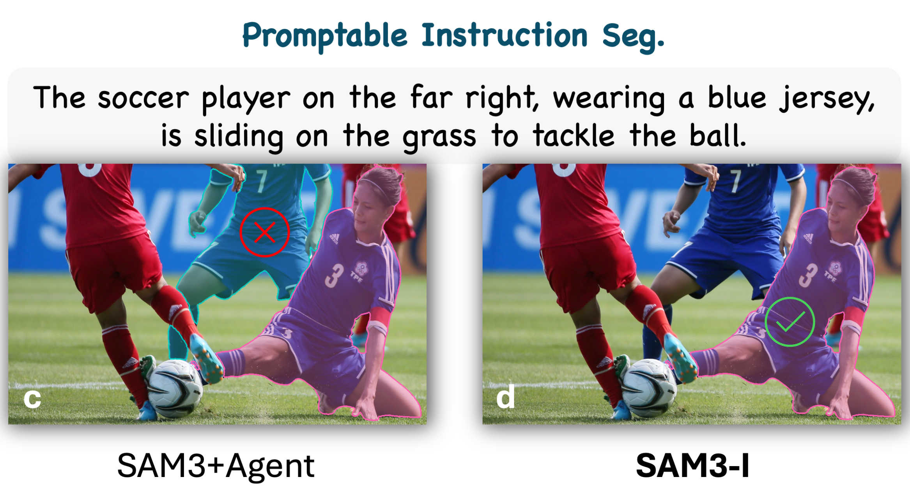
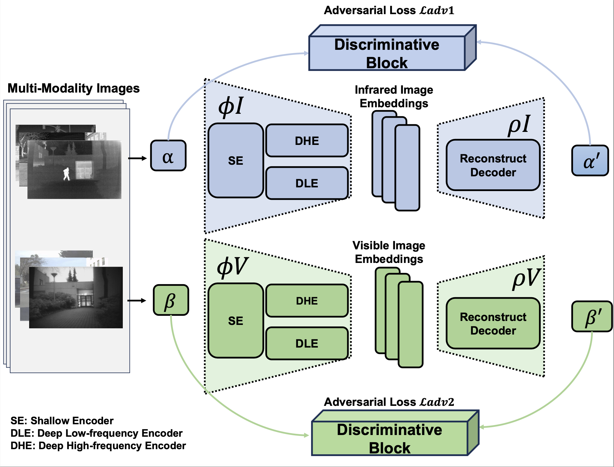

Yuchen Guo
McCormick School of Engineering
Northwestern University
Bio
I am currently pursuing the Master of Science in Artificial Intelligence at Northwestern University, Evanston, IL, and I received my Bachelor of Science in Computer Science and Technology from Hong Kong Baptist University, Zhuhai, China.
Previously, I worked as a research intern at XPixel Group, Multimedia Laboratory (MMLab), SIAT, Chinese Academy of Sciences, advised by Prof. Chao Dong. I also conducted research at the Institute for AI Industry Research (AIR), Tsinghua University, advised by Prof. Yilun Chen.
Additionally, I was a Summer Visiting Student at the University of Oxford, advised by Prof. Tom Rainforth. I also work closely with Dr. Shihao Zou (SIAT) and Dr. Wei Ji (Yale).
📧 Email: yuchenguo2027@u.northwestern.edu
Publications
Note: * indicates equal contribution.

Main Conference
